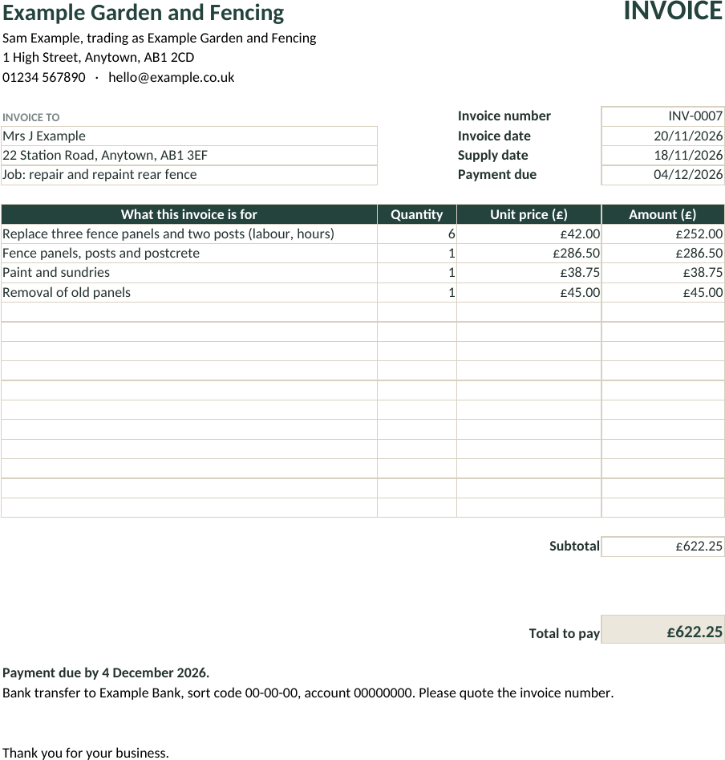
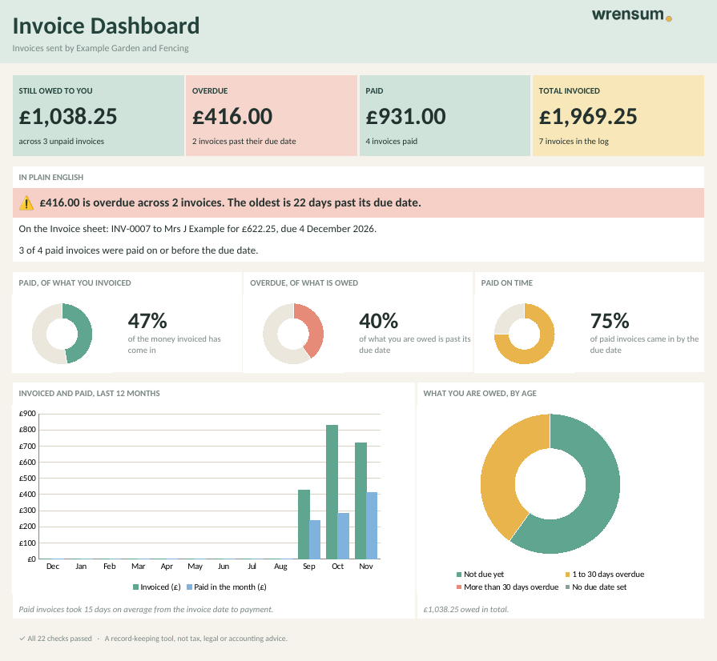
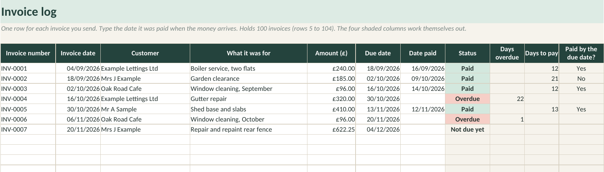
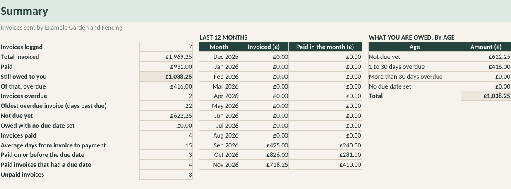

Invoice Template and Tracker
Make a clean invoice in a couple of minutes, with VAT switched on or off. Then keep a simple log of what you have sent, and see at a glance what you are owed and which invoices are overdue.
Buy for £4One-off payment. One Excel file (.xlsx), delivered as a download. A record-keeping tool: it is not tax, legal or accounting advice.

What you get
- A printable invoice with 15 lines: what it is for, quantity, unit price and amount, added up for you
- Your details typed once in Settings and printed on every invoice: your name, any business name, address, phone, email and how to pay
- VAT on or off with one setting. Off, the invoice does not mention VAT. On, VAT is added at the rate you set and your VAT number is printed
- A payment due date worked out from the invoice date and your own payment terms
- An optional discount, typed in a box beside the invoice that does not print
- An invoice log with room for 100 invoices: number, date, customer, amount, due date and date paid
- Each invoice marked Paid, Not due yet or Overdue, with the days overdue counted for you
- A summary of what you have invoiced, what has been paid, what is owed and how old it is, with the last 12 months month by month
- A dashboard, in light and dark, that says in plain English what is overdue and by how long
- A sheet of 22 checks that looks for common slips: a part-filled line, text in a date box, a repeated invoice number, a total typed over
Who it is for
Sole traders and very small firms in the UK who send a handful of invoices a month and want them to look right and add up, without paying a monthly fee for invoicing software. You need Microsoft Excel.
How to use it
- In Settings, enter your details, how you want to be paid and whether you are VAT registered.
- On the Invoice sheet, type the customer, the invoice number, the dates and the lines.
- Print it or save it as a PDF and send it.
- Add one line to the Invoice log. When the customer pays, type the date.



Questions
- Does it save every invoice?
- No. The file holds one invoice at a time. You print it or save it as a PDF, keep that copy, and add a line to the log. For the next invoice you change the number, the customer and the lines.
- Does it add each invoice to the log by itself?
- No. That would need a macro, and the file has none. You type one line in the log for each invoice. The Dashboard tells you if the invoice on screen is not in the log yet.
- Does the invoice include everything the law requires?
- GOV.UK lists what an invoice must include, and the Invoice sheet was laid out from that list, read on 21 November 2026. The address of the page is in the file. It is your invoice, so check it against the list before you send it. This is not legal advice.
- I am VAT registered. Is it a full VAT invoice?
- It adds VAT to the whole invoice at one rate and prints your VAT number. GOV.UK says a VAT invoice needs more information than other invoices, and this template has not been checked against those rules. If you sell at more than one VAT rate on the same invoice, it is not the right tool.
- I am not VAT registered. Will it mention VAT?
- No. With VAT registered set to No, there is no VAT line, no VAT number and no mention of VAT anywhere on the invoice.
- Does it chase late payers or work out interest?
- No. It shows which invoices are overdue and by how many days. It states no rule on late payment and adds no interest.
- What do I need to open it?
- Microsoft Excel. The file has also been tested in LibreOffice Calc. It contains no macros.
- Are the customers in it real?
- No. Every name, date and amount in the file is invented, to show the format. Clear them and type your own.
- How was it made?
- It was built with the help of AI, like everything on this site, and then checked: it recalculates with no errors, it has 22 checks of its own, an independent set of tests works out the figures a second way, and a separate reviewer tried to break it before release.
Free to use first
The day rate calculator shows what to charge for your time.
Other tools
To price the job before you invoice it, see the Quote Builder (£8). For a full year of income and expenses, the Sole Trader Bookkeeping Workbook (£12) adds them up under the box numbers of HMRC's short self-employment pages.